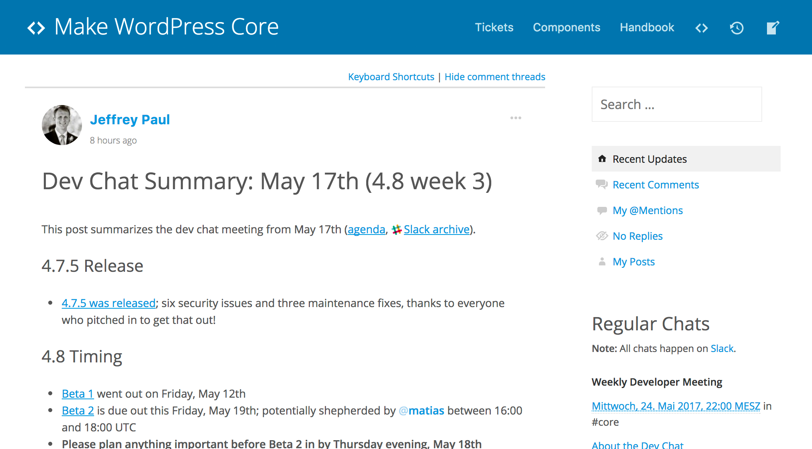

Contributing to WordPress Core
Moving beyond your first patch
A workshop by @felixarntz-
Make WordPress Core
- Blog
- Tickets
- Components
- Handbook
-
WordPress Core Trac
- Opening a ticket
- Finding tickets
- Creating a patch
-
WordPress Slack
- Channels
- Meetings
- Bug-Scrubs
Please ask questions anytime!
Your key to the gate: A wordpress.org account
- Grants you access to opening tickets, submitting patches, publishing plugins and themes, translating, slacking, ... - everything!
- If you do not already have an account, create one at https://login.wordpress.org/register. Reminder: You can never change your username, so choose a good one!
Make WordPress Core
https://make.wordpress.org/core/Blog

Subscribe to this blog to know about anything important
that happens in Core development!
Tickets
Here is where you get a good first overview about tickets,
categorized by important metrics.
Components

You should find a component that interests you
and focus on in it order to streamline your efforts.
Handbook
Your source of information for everything related to contributing to Core.
Learn the WordPress philosophies!
WordPress Core Trac
https://core.trac.wordpress.orgOpening a ticket
- Brief summary of the ticket description.
-
Best practice: If you're filing a bug, describe what's wrong.
→ Example: "HTML comments in posts aren't handled correctly" -
Best practice: If you're filing an enhancement or feature request, use a call-to-action-type direction.
→ Example: "Encourage people to change default tagline"

- Ticket content: May be as long or as short as you like, but be precise.
- Best practice: Do not use empty phrases, be on point. Tone on Trac is rather formal, so try to avoid things like "I would love to see this!" or similar.
-
Pro tip: You may reference another ticket by entering
#{ticket_id}, and it will automatically become a link.
→ Example: "This was previously discussed in #40000." -
Pro tip: You may reference a specific changeset by entering
[{changeset_id}], and it will automatically become a link.
→ Example: "The original bug was fixed in [40000]."

- Ticket type: Either "defect (bug)", "enhancement" or "feature request".
- The vast majority of tickets are for bugs or enhancements.
-
It's usually not a good idea to open a feature request ticket out of the blue. New feature ideas should be discussed in advance with others and only be transformed into a ticket once the idea has enough traction to be viable for a possible inclusion in WordPress Core.
→ Furthermore, new features need to go through a special feature project workflow. See https://make.wordpress.org/core/features/ and https://make.wordpress.org/core/2016/03/31/iterating-on-feature-plugins/ for more information. - There is a fourth ticket type called "task (blessed)". It is only available to component maintainers and committers and is intended to be used for task tickets, i.e. tickets that usually span multiple smaller sub-tickets to reach a bigger goal.

- This field should only be used when filing a bug.
- It should contain the number of the earliest version where the bug occurred. This is not necessarily the version of WordPress you are using.
- If you're not sure which version to enter, leave the field blank, so someone else can add the information later.
-
Pro tip: If you already know where in the code the bug is coming from, you can use
svn blame {file}@r{changeset_id} | lessto work your way backwards and find out the earliest affected version.
→ Example:svn blame src/wp-includes/post.php@r40000 | less
You can then use400Gto go to line 400 and see the changeset number when that line was last changed.
Several TODO pages here
Summary: Recommendations for a successful contribution path
- Learn and follow the WordPress philosophies.
- Find a Core component to focus on.
- Attend and participate in relevant Slack meetings.
- Discuss ideas and bugfixes before writing code.
- Be persistent, but patient.
- Don't take anything personally.
Thank you!
Felix Arntz
Plugin Developer / Core Committer / Freelancer